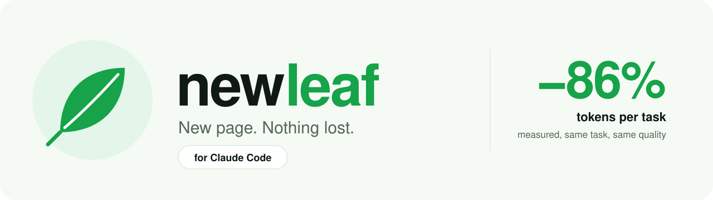
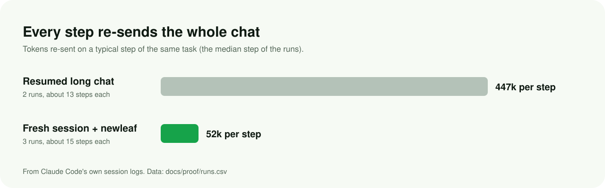
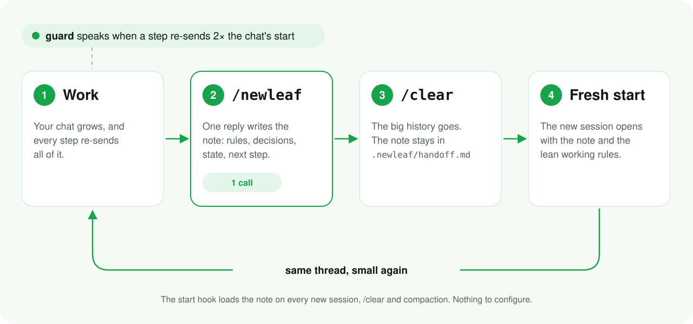
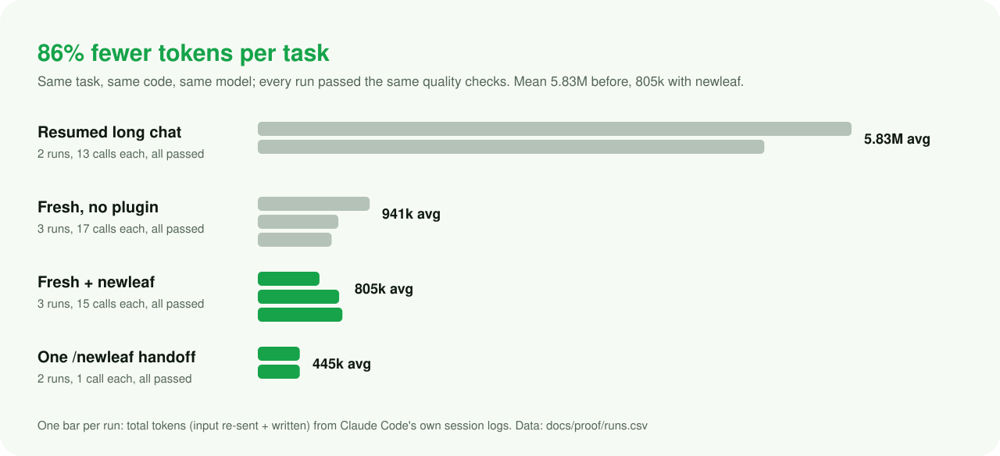

newleaf writes a handoff note in one call, loads it into your next session on its own, and tells you when a chat has grown costly. Starting fresh stops costing you your context, so you can do it often, and stop paying to re-send a giant conversation on every step.
Inside: why your limits burn (page 2), how newleaf works (3), installing and using it (4), the proof and how it was measured (5), and answers to common questions (6).
A Claude Code session is a conversation, and every step of it (each tool call, each answer) sends the whole conversation to the model again. A cache makes the re-sending cheaper, but it still counts. Keep one session open for days and each step drags hundreds of thousands of tokens along, so even a one-line change costs millions.

So writing shorter replies cannot save much. What saves is a smaller conversation. People keep long sessions because a fresh one forgets the rules and decisions they set up. newleaf removes that reason.

| Piece | What it does |
|---|---|
/newleaf | One reply writes the note. The branch, commit, changed files and recent commits are gathered before the model reads the skill, so the note costs a single call. |
| Stop hook | Takes the note from the reply and saves it to .newleaf/handoff.md, keeps the old one as handoff.prev.md, and adds a .gitignore so the folder never reaches git. |
| Start hook | On every new session, /clear and compaction, loads the lean working rules and the note, and says if the branch or commit moved on since the note. |
| Guard | Before each prompt, compares what a step re-sends now with the chat's first step. At 2× it says so, again at 4× and 8×. A handoff costs one call, so past 2× it pays back within the next request. |
# in any terminal: PowerShell, cmd, bash, zsh
claude plugin marketplace add zannn123/newleaf
claude plugin install newleaf@newleaf
Or inside Claude Code: /plugin marketplace add zannn123/newleaf, then /plugin install newleaf@newleaf. It applies to every project from then on.
Needs: bash. It is built in on macOS, Linux and WSL; on Windows it comes with Git for Windows, which Claude Code recommends. No Python, no Node, no network.
/newleaf. One reply writes the note and the hook saves it./clear. The fresh session starts with the note and the rules.The guard's line looks like this:
newleaf: every step of this chat now re-sends 612k tokens, 10x its start (59k). Type /newleaf, then /clear: the next session starts small with the note.
~/.claude/newleaf.json for your machine, or .newleaf/config.json in a project; the project wins.
| Key | Default | Meaning |
|---|---|---|
rules | true | false leaves out the lean working rules. |
warn_at | 2× the chat's first step | Tokens per step that wake the guard; 0 turns it off. |
claude plugin uninstall newleaf claude plugin marketplace remove newleaf
One real task on a real production Flutter codebase: restyle a split button. Same starting code, same prompt, same model (Claude Opus). Tokens come from Claude Code's own session logs: everything each call re-sent plus everything it wrote. Every run had to pass the same checks: the project's 97 report tests, the analyzer, no hard-coded colour, and changes only inside the feature's folder.

| Condition | Runs | Tokens per task | Calls | Re-sent per call | Quality |
|---|---|---|---|---|---|
| Resumed long chat (before) | 2 | 5.83M | 13 | 447k | 2 / 2 |
| Fresh session, no plugin | 3 | 941k | 17 | 57k | 3 / 3 |
| Fresh session + newleaf | 3 | 805k | 15 | 52k | 3 / 3 |
One /newleaf handoff | 2 | 445k | 1 | 441k | 2 / 2 notes |
tools/measure.py shows yours.Yes, they add up. caveman shortens replies, about 0.3% of tokens; newleaf cuts the re-sent conversation, about 99%.
.newleaf/handoff.md in the project, the previous one in handoff.prev.md. Git ignores the folder on its own.
Not the ones in the note: "Rules in play" carries them in your words, and the start hook loads the note before your first prompt.
No. The hooks read your local session log and write .newleaf/ in your project. No telemetry.
Set warn_at to the tokens per step you accept, or 0 to switch it off.
The hooks need bash: install Git for Windows. Then claude plugin list should show newleaf enabled.
Clone the repo and run bash tests/hooks.sh (every hook, offline) and bash tests/smoke.sh (end to end with your Claude Code).
Windows 11 (Git Bash), Ubuntu, Debian (mawk), Alpine (busybox awk) and macOS (CI).
Experimental: codex plugin marketplace add zannn123/newleaf, codex plugin add newleaf@newleaf, trust its hooks with /hooks, then $newleaf and /new. Built from Codex's docs and source; not yet measured in a live Codex session.